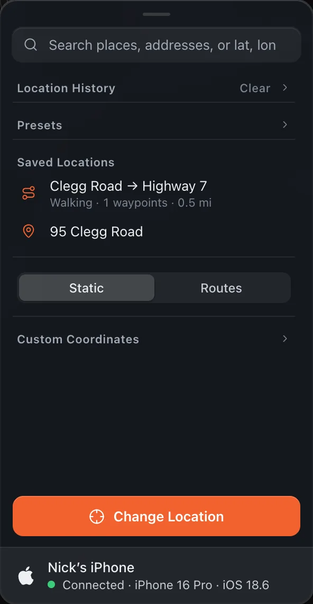
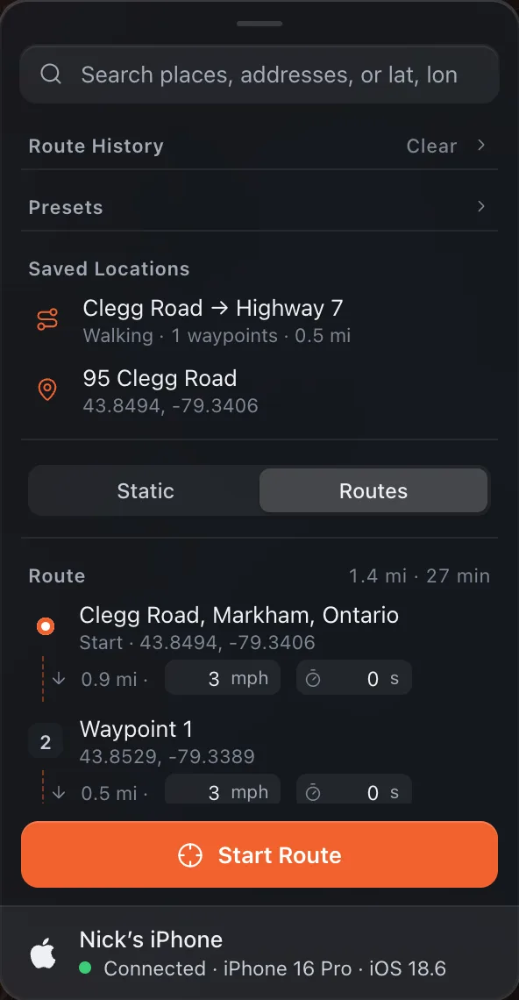

Change Location
Location History
Alibi keeps a history of your past locations and routes, at the top of the panel, and shows the one that matches the current mode.
Location History (Static Mode)
In Static mode the history shows your past changed locations, up to 50 entries. Each entry records the address and coordinates, newest first. The five most recent are shown; Show all expands the list.

Click an entry to fly to that location and update the map pin, then press Change Location. Hover an entry and click × to remove it, or click Clear to remove all history.
Route History (Routes Mode)
In Routes mode the history shows your past routes, up to 20 entries. Each entry shows the travel mode, the number of waypoints and the distance.

Click an entry to restore the full route setup: start, end, waypoints, travel mode, leg speeds and the Stay at end setting. Press Preview Route to recalculate the road path before starting it. Hover an entry and click × to remove it, or click Clear to remove all route history.